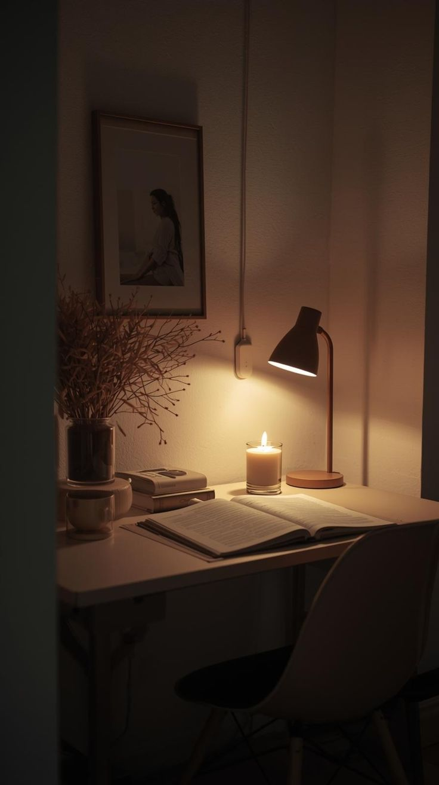
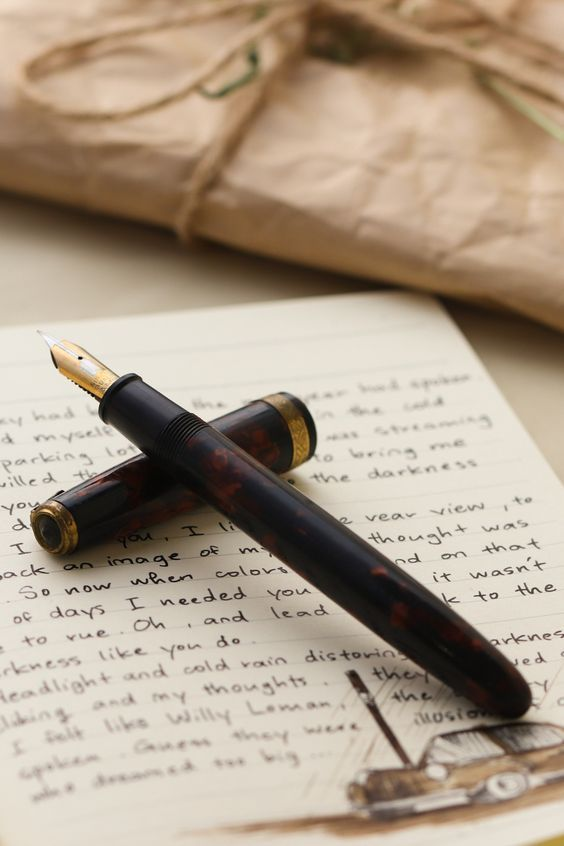

"Kabhi kabhi zindagi humein bhaagti hui nahi milti... balki khamosh kamron mein baith kar humein khud se milwati hai."

✦ Khamosh Saturday ✦
Subah Fajr ki azaan ke saath hi Fahad ki aankh khul gayi.
Aaj Saturday tha.
Daftar jana tha...
Lekin aaj ka din aam dino se thoda mukhtalif hota tha.
Saturday ko office mein kaam kam rehta tha.
Team ke aksar members chhutti par hote the.
Fahad ne wuzu kiya.
Fajr ki namaz ada ki.
Sajde mein kuch lamhe ruk kar usne phir wahi dua maangi jo pichhle do din se uske labon par thi.
"Ya Allah... mere dil ko seedha rakh."
Namaz ke baad woh kuch der Qur'an ki tilawat karta raha.
Phir tayyar hokar ghar se nikal gaya.
Office uske ghar se kaafi door tha.
Isi liye roz ki tarah aaj bhi use waqt se pehle nikalna padta tha.
Mumbai ki sadkein dheere dheere jaag rahi thi.
Kahin chai walon ke bartanon ki awaaz...
Kahin bus stop par khade log...
Kahin dukaanon ke shutter uth rahe the.
Aur unhi sab ke beech Fahad bhi roz ki tarah apne daftar ki taraf badh raha tha.
Lagbhag saadhe dus baje woh office pahunch gaya.
Security guard ne hamesha ki tarah muskurate hue kaha,
"Assalamu Alaikum, Fahad bhai."
"Wa Alaikum Assalam."
Attendance lagakar woh seedha apni cabin ki taraf chala gaya.
Cabin ka darwaza khola.
Andar hamesha ki tarah sukoon tha.
Usne bag kursi par rakha.
AC on kiya.
Phir computer ka power button dabaya.
System start hote hi uske labon par aadat ke mutabiq ek hi lafz aaya.
"Bismillah."
Screen dheere dheere load hone lagi.
Sabse pehle usne Outlook khola.
Overnight aaye hue emails dekhne laga.
Kuch partners ke replies aaye the.
Kuch technical mails.
Jin mails ka jawab dena zaroori tha, unka reply usne foran bhejna shuru kar diya.
Baaki mails ko usne baad ke liye mark kar diya.
Uske baad usne office ka WhatsApp khola.
Kai unread messages the.
Woh ek ek karke sabka jawab deta gaya.
Cabin mein sirf keyboard ki halki halki awaaz goonj rahi thi.
Tabhi cabin ka darwaza dheere se khula.
"Assalamu Alaikum."
Fahad ne nazar uthayi.
Aamina thi.
Hamesha ki tarah parde mein.
Haath mein apna bag.
"Wa Alaikum Assalam."
Usne apni bagal wali seat par bag rakha.
Computer on kiya.
Login hone tak khamoshi chhayi rahi.
System khulte hi usne Fahad ki taraf dekha.
"Aaj kahan se shuru karna hai?"
Fahad ne apni screen se nazar hataye baghair kaha,
"Aaj pending destinations ki list complete karni hai."
"Saturday hai...
Aaram se finish ho jayegi."
"Theek hai."
Bas itni si baat hui.
Aur dono apne apne kaam mein masroof ho gaye.
Aaj poora floor lagbhag khaali tha.
Kabhi kabhi bahar se kisi ke chalne ki awaaz aa jaati.
Phir sab kuch dobara khamosh ho jaata.
Lagbhag gyarah baje pehla salesperson cabin mein aaya.
"Good Morning, Fahad."
"Morning."
Usne do teen customer ke baare mein baat ki.
Ek destination confirm karwayi.
Aur chala gaya.
Thodi der baad doosra aaya.
Phir teesra.
Saturday tha...
Isliye bheed nahi thi.
Log aate...
Do minute baat karte...
Aur chale jaate.
Is dauraan Aamina bina kisi shor sharabe ke apna kaam karti rahi.
Kabhi Excel sheet update karti.
Kabhi list mein correction karti.
Jab bhi koi doubt hota...
Woh Fahad ka naam lekar nahi bulati thi.
Bas halka sa uski taraf dekhti...
Ya screen ki taraf ishara kar deti.
Fahad samajh jaata.
"Ye wala?"
Aamina sir hila deti.
Fahad do minute mein baat samjha deta.
"Ho gaya?"
"Haan."
Aur baat wahin khatam ho jaati.
Na zarurat se zyada lafz.
Na be-maqsad guftagu.
Dono ke darmiyan hamesha ek adab tha...
Jo kabhi tootne nahi diya gaya.
Waqt apni raftaar se guzarta raha.
Kab dekhte hi dekhte dopahar ke do baj gaye...
Kisi ko ehsaas hi nahi hua.
Saadhe do baje tak aaj ka lagbhag saara kaam mukammal ho chuka tha.
Saturday ko aksar aisa hi hota tha.
Agar koi urgent kaam na ho, to dopahar tak team ka zyada tar kaam khatam ho jaata tha.
Fahad ne screen lock ki.
Ghadi ki taraf dekha.
Phir muskurakar kaha,
"Lagta hai aaj Saturday ne waqai reham kar diya."
Aamina ne bhi screen band karte hue sirf itna kaha,
"Ji."
Aur dono apne apne lunch break ke liye uth khade hue...
Lunch break hote hi dono apni apni jagah se uth khade hue.
Roz ki tarah aaj bhi dono ka routine alag tha.
Fahad pehle neeche jaakar jaldi se lunch kar leta tha.
Uske baad seedha masjid chala jaata.
Namaz uske liye sirf ek farz nahi thi...
Balki din bhar ki thakan aur uljhan ka sukoon bhi thi.
Doosri taraf...
Aamina pehle ladies prayer room mein Zuhr ki namaz ada karti.
Phir apni do office ki doston ke saath pantry mein jaakar khana kha leti.
Ye routine pichhle kaafi arse se bilkul aisa hi chal raha tha.
Na kabhi Fahad ne ismein koi tabdeeli dekhi...
Na hi Aamina ne.
Dono ne apni apni jagah saaf ki aur roz ki tarah waqt par cabin ki taraf laut aaye.
Theek teen baje dono dobara cabin mein wapas aa gaye.
Office pehle se bhi zyada khaali lag raha tha.
Poore floor par sannata tha.
Cabin mein sirf AC ki halki si awaaz sunai de rahi thi.
Fahad ne system unlock kiya.
Kuch pending mails dobara check kiye.
Ek do reports khol kar verify ki.
Phir screen par nazar jama kar baith gaya.
Uske saamne bagal wali seat par Aamina bhi apni screen dekh rahi thi.
Uska aaj ka kaam lagbhag khatam ho chuka tha.
Isliye woh chup-chaap monitor ki taraf dekhti rehti...
Jaise intezar kar rahi ho...
Ke shayad Fahad ab koi naya kaam bataye.
Magar cabin mein kisi ne kuch nahi kaha.
Paanch minute...
Dus minute...
Pandrah minute...
Khamoshi apni jagah qayam thi.
Kabhi Fahad kisi mail ka jawab deta, kabhi Aamina apni Excel sheet ko dobara check karti.
Fahad kabhi screen dekhta...
Kabhi mouse hila deta...
Kabhi kisi file ko bina wajah khol kar band kar deta.
Kaam khatam ho chuka tha, isliye dono bas waqt guzarne ka intezar kar rahe the.
Sach to ye tha...
Uska dhyan kaam mein tha hi nahi.
Raat ka woh khwaab phir uske zehan ke darwaze par dastak de raha tha.
Woh khud ko samjha raha tha.
"Kaam par dhyan do..."
"Ye sab sirf ek khwaab tha..."
Magar dil har baar uski baat maanane se inkaar kar deta.
Ghadi ki sui dheere dheere chaar baje ke qareeb pahunch gayi.
Aakhir Fahad ne khamoshi tod hi di.
Usne screen se nazar hatayi.
Halka sa muskura kar bola,
"Ek baat puchun...?"
Aamina ne bhi monitor se nazar hata kar uski taraf dekha.
"Ji."
Fahad halki si hansi ke saath bola,
"Thoda ajeeb sawaal hai..."
"Hansiyega mat."
Aamina ne bhi halki si muskurahat ke sath kaha.
"Nahi hasungi."
Fahad ne do pal ruk kar kaha,
"Kabhi aisa laga... ke aapne koi ajeeb cheez dekhi ho?"
"Matlab..."
"Jise log bhoot kehte hain?"
Ek lamhe ke liye Aamina chup rahi.
Phir usne dheere se kaha,
"Ek waqia hua tha..."
"Main tab school mein thi."
"Ek din main aur meri ek dost washroom ki taraf ja rahe the."
"Wahan pahunchte hi achanak washroom ka darwaza zor se band ho gaya."
"Hum dono itna darr gaye..."
"Ke bina peeche dekhe bhaagte hue class mein wapas aa gaye."
Fahad muskura diya.
"Phir baad mein pata chala hawa thi... ya waqai koi tha?"
Aamina hans padi.
"Pata nahi..."
"Lekin us waqt humein yaqeen tha ke school mein zaroor kuch hai."
"Hamare school ko waise bhi sab 'bhotiya school' kehte the."
Fahad zor se hans pada.
"Achha hua main us school mein nahi tha."
Ek pal ke liye dono hans pade.
Dono ki hansi kuch lamhon tak cabin ki khamoshi mein goonjti rahi.
Phir sab kuch dobara pehle jaisa ho gaya.
Sukoon...
Khamoshi...
Din abhi baaki tha... aur shaam apne saath ek aur yaad lekar aane wali thi.
Aamina dobara apni screen ki taraf mutawajjeh ho gayi.
Aur Fahad bhi kuch mails check karne laga.
Kuch hi der guzri thi ke cabin ka darwaza dobara khula.
Ek salesperson andar aaya.
"Fahad, ek destination confirm karni thi."
Fahad ne foran system par woh destination kholi.
Dono kuch der billing aur routing ke baare mein baat karte rahe.
Beech beech mein Aamina bhi apni screen par list verify karti rahi.
Lagbhag pandrah minute baad salesperson ne files band ki.
"Theek hai... Monday ko baaki dekh lenge."
"In Sha Allah."
Woh muskurata hua cabin se nikal gaya.
Dobara wahi sannata chha gaya.
Ghadi ne saadhe chaar bajne ka ishara diya.
Aamina apni kursi se uthi.
"Main break se aati hoon."
"Theek hai."
Roz ki tarah woh Asr ki namaz ke liye chali gayi.
Cabin mein ab sirf Fahad akela tha.
Usne ek do mails ka jawab diya.
Phir kuch der reports dekhne laga.
Pandrah minute baad Aamina wapas aa gayi.
Jaise hi woh apni seat par baithi, Fahad bhi uth khada hua.
"Main bhi abhi aata hoon."

✦ Dot Game & Yaadein ✦
"Theek hai."
Fahad seedha masjid ki taraf chala gaya.
Asr ki namaz ada ki.
Namaz ke baad kuch der masjid ke sehan mein baith kar tasbeeh padhta raha.
Phir usne aadat ke mutabiq apna phone nikala.
Do teen WhatsApp messages aaye hue the.
Ek Qasim ka bhi tha.
"Zinda hai ya Saturday ko bhi office mein qaid hai?"
Fahad halki si muskurahat ke saath message padh kar phone wapas jeb mein rakh liya.
Jawab usne baad mein dene ka socha.
Kuch der baad woh dobara cabin mein aa gaya.
Ab kaam naam ki koi khaas cheez baqi nahi thi.
Fahad ne drawer khola.
Usmein se ek purani diary nikali.
Usne pen uthaya.
Aur diary ke ek safhe par chaar nukte bana diye.
Aamina ne hairani se diary ki taraf dekha.
"Ye kya hai?"
Fahad muskura diya.
"Game."
"Konsa game?"
"Dot Game."
Aamina ne halki si muskurahat ke saath kaha,
"Achha... chaliye."
Dono game shuru hi karne wale the...
Ke itne mein cabin ka darwaza phir khula.
Fahad ke Team Leader andar aaye.
Unki nazar diary par padi.
Phir dono ki taraf.
Woh bas halka sa muskura diye.
"Fahad..."
"Ji Sir."
"Zara mere cabin mein aana."
"Ji."
Fahad diary band karke unke saath bahar nikal gaya.
Aamina chup-chaap apni seat par baith gayi.
Lagbhag das minute tak Fahad Team Leader ke cabin mein raha.
Monday ki planning...
Kuch pending reports...
Aur agle hafte ke kaam ke baare mein guftagu hoti rahi.
Baatein khatam hui to Fahad wapas cabin mein aa gaya.
Jaise hi woh baitha, Aamina ne halki si muskurahat ke saath poocha,
"Sir ne daanta to nahi?"
Fahad muskuraya.
"Nahi."
"Kuch aur kaam tha."
"Waise bhi Saturday ko kaam kam hota hai."
"Unhe bhi pata hai."
Aamina ne sukoon ka saans liya.
"Mujhe laga... game ki wajah se bulaya hoga."
Fahad ne diary dobara khol di.
"Nahi."
"Ab game poori karte hain."
Dono phir se Dot Game mein masroof ho gaye.
Kabhi ek doosre ki chaal kaat dete...
Kabhi koi chhota sa mazaak ho jaata...
Aur kab dekhte hi dekhte shaam dhalne lagi...
Kisi ko ehsaas hi na hua.
Ghadi ne saadhe saat bajne ka ishara diya.
Fahad ne diary band ki.
System shutdown kiya.
Aamina ne bhi apna computer band kar diya.
Dono ne apni apni desk theek ki.
Aur roz ki tarah ek hi jumla kaha.
"Allah Hafiz."
"Allah Hafiz."
Dono office se bahar nikal gaye.
Saturday khatam ho chuka tha...